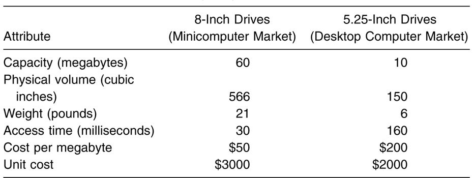
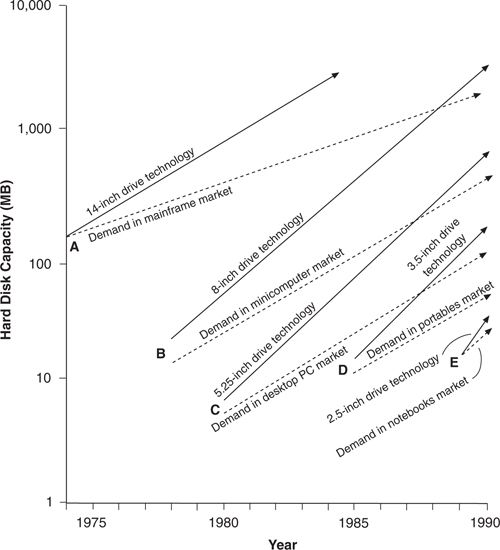

Most technological change in the disk drive industry has consisted of sustaining innovations of the sort described above. In contrast, there have been only a few of the other sort of technological change, called disruptive technologies. These were the changes that toppled the industry’s leaders.
The most important disruptive technologies were the architectural innovations that shrunk the size of the drives—from 14-inch diameter disks to diameters of 8, 5.25, and 3.5-inches and then from 2.5 to 1.8 inches. Table 1.1 illustrates the ways these innovations were disruptive. Based on 1981 data, it compares the attributes of a typical 5.25-inch drive, a new architecture that had been in the market for less than a year, with those of a typical 8-inch drive, which at that time was the standard drive used by minicomputer manufacturers. Along the dimensions of performance important to established minicomputer manufacturers—capacity, cost per megabyte, and access time—the 8-inch product was vastly superior. The 5.25-inch architecture did not address the perceived needs of minicomputer manufacturers at that time. On the other hand, the 5.25-inch drive had features that appealed to the desktop personal computer market segment just emerging in the period between 1980 and 1982. It was small and lightweight, and, priced at around $2,000, it could be incorporated into desktop machines economically.
Generally disruptive innovations were technologically straightforward, consisting of off-the-shelf components put together in a product architecture that was often simpler than prior approaches. 8 They offered less of what customers in established markets wanted and so could rarely be initially employed there. They offered a different package of attributes valued only in emerging markets remote from, and unimportant to, the mainstream.
The trajectory map in Figure 1.7 shows how this series of simple but disruptive technologies proved to be the undoing of some very aggressive, astutely managed disk drive companies. Until the mid-1970s, 14-inch drives with removable packs of disks accounted for nearly all disk drive sales. The 14-inch Winchester architecture then emerged to sustain the trajectory of recording density improvement. Nearly all of these drives (removable disks and Winchesters) were sold to mainframe computer manufacturers, and the same companies that led the market in disk pack drives led the industry’s transition to the Winchester technology.
Table 1.1 A Disruptive Technology Change: The 5.25-inch Winchester Disk Drive (1981)

Source: Data are from various issues of Disk/Trend Report.
Figure 1.7 Intersecting Trajectories of Capacity Demanded versus Capacity Supplied in Rigid Disk Drives

Source: Clayton M. Christensen, “The Rigid Disk Drive Industry: A History of Commercial and Technological Turbulence,” Business History Review 67, no. 4 (Winter 1993): 559. Reprinted by permission.
The trajectory map shows that the hard disk capacity provided in the median priced, typically configured mainframe computer system in 1974 was about 130 MB per computer. This increased at a 15 percent annual rate over the next fifteen years—a trajectory representing the disk capacity demanded by the typical users of new mainframe computers. At the same time, the capacity of the average 14-inch drive introduced for sale each year increased at a faster, 22 percent rate, reaching beyond the mainframe market to the large scientific and supercomputer markets. 9
Between 1978 and 1980, several entrant firms—Shugart Associates, Micropolis, Priam, and Quantum—developed smaller 8-inch drives with 10, 20, 30, and 40 MB capacity. These drives were of no interest to mainframe computer manufacturers, which at that time were demanding drives with 300 to 400 MB capacity. These 8-inch entrants therefore sold their disruptive drives into a new application—minicomputers. 10 The customers—Wang, DEC, Data General, Prime, and Hewlett-Packard—did not manufacture mainframes, and their customers often used software substantially different from that used in mainframes. These firms hitherto had been unable to offer disk drives in their small, desk-side minicomputers because 14-inch models were too big and expensive. Although initially the cost per megabyte of capacity of 8-inch drives was higher than that of 14-inch drives, these new customers were willing to pay a premium for other attributes that were important to them—especially smaller size. Smallness had little value to mainframe users.
Once the use of 8-inch drives became established in minicomputers, the hard disk capacity shipped with the median-priced minicomputer grew about 25 percent per year: a trajectory determined by the ways in which minicomputer owners learned to use their machines. At the same time, however, the 8-inch drive makers found that, by aggressively adopting sustaining innovations, they could increase the capacity of their products at a rate of more than 40 percent per year—nearly double the rate of increase demanded by their original “home” minicomputer market. In consequence, by the mid-1980s, 8-inch drive makers were able to provide the capacities required for lower-end mainframe computers. Unit volumes had grown significantly so that the cost per megabyte of 8-inch drives had declined below that of 14-inch drives, and other advantages became apparent: For example, the same percentage mechanical vibration in an 8-inch drive, as opposed to a 14-inch drive, caused much less variance in the absolute position of the head over the disk. Within a three-to-four-year period, therefore, 8-inch drives began to invade the market above them, substituting for 14-inch drives in the lower-end mainframe computer market.
As the 8-inch products penetrated the mainframe market, the established manufacturers of 14-inch drives began to fail. Two-thirds of them never introduced an 8-inch model. The one-third that introduced 8-inch models did so about two years behind the 8-inch entrant manufacturers. Ultimately, every 14-inch drive maker was driven from the industry. 11
The 14-inch drive makers were not toppled by the 8-inch entrants because of technology. The 8-inch products generally incorporated standard off-the-shelf components, and when those 14-inch drive makers that did introduce 8-inch models got around to doing so, their products were very performance-competitive in capacity, areal density, access time, and price per megabyte. The 8-inch models introduced by the established firms in 1981 were nearly identical in performance to the average of those introduced that year by the entrant firms. In addition, the rates of improvement in key attributes (measured between 1979 and 1983) were stunningly similar between established and entrant firms. 12